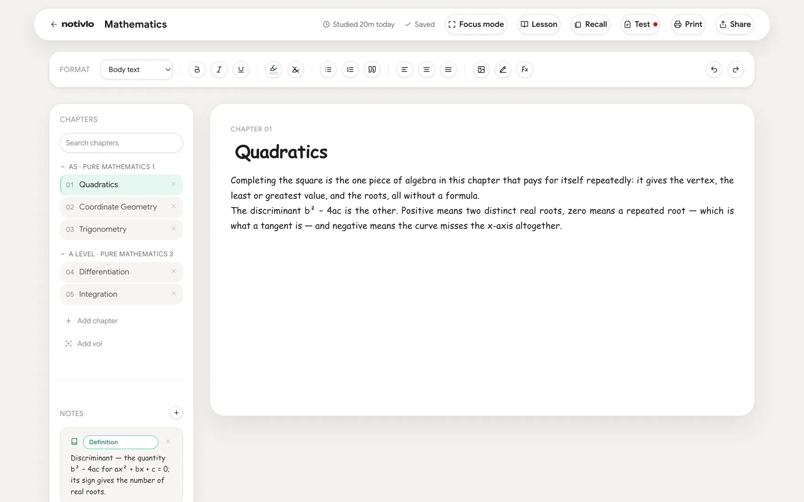
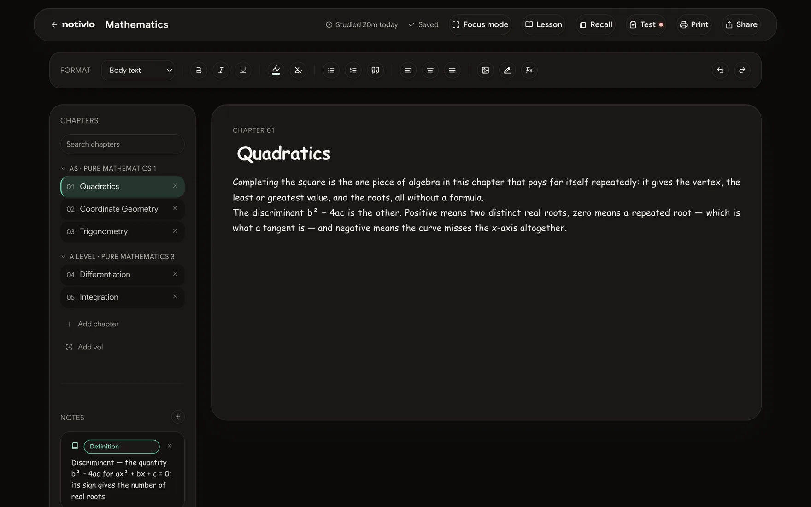

01
Recall
Cards made from your own chapters. What you keep missing comes back round sooner than what you know.
Early beta · looking for testers
A notebook for each class, a week built around what is actually due, and a home page that opens on the next thing to do.
Nothing to install. An account is three fields — no card, no ads, no feed.


The week


Part 01 / 03
Deadlines, classes and study blocks on one grid, so an essay due Sunday stops being a surprise on Saturday night.
Seven days · 15-minute blocks · click an empty hour to fill it
The notebooks


Part 02 / 03
Organised the way a syllabus actually is — not one endless document, and not a folder of loose files.
Volumes · chapters · four text sizes
Part 03 / 03
Built for A level — Cambridge syllabuses including 9709, 9702, 9701, 9700, 9708 and 9618.
01
Cards made from your own chapters. What you keep missing comes back round sooner than what you know.
02
Short papers whenever you want one, and a full mock on a schedule. Questions are written for the app — never scraped past papers.
03
Seven lessons on the topics that trip people up — the discriminant, projectiles, titration, enzymes, elasticity, unseen poetry, two's complement.
04
One mark-scheme line per mark, so you can see where the marks actually went rather than guessing.
05
Sign in on another device and your notebooks, agenda and progress are there. Or skip the account and keep it on one device.
06
Follows your system or stays where you put it. Four text sizes that scale the whole app, not just the words.
Get it
The browser version and the Mac app are the same app. Start in the browser; install it if you like it.
Quickest
Works on any computer, phone or tablet. Nothing to install, nothing to get past.
Open notivloFor Mac
A real app in your Dock, in its own window, with the whole app bundled inside it.
Download .dmgnotivlo isn't signed with a paid Apple Developer certificate yet, so macOS shows a warning the first time. The app is sandboxed and can only reach its own sync server — but you shouldn't take that on faith from the person asking you to install it, so here's exactly what to click.
.dmg and drag notivlo into Applications.If you'd rather do it in one line instead:
xattr -dr com.apple.quarantine /Applications/notivlo.app
The part I actually need
This is an early beta and it is being built by one person. Anything you noticed is worth sending — a bug, a thing that confused you, a subject that's missing, or a feature you expected to find.
What gets sent: your message, your email if you typed one, which version you were on and your browser's user-agent string. Nothing from your notebooks, and nothing else.